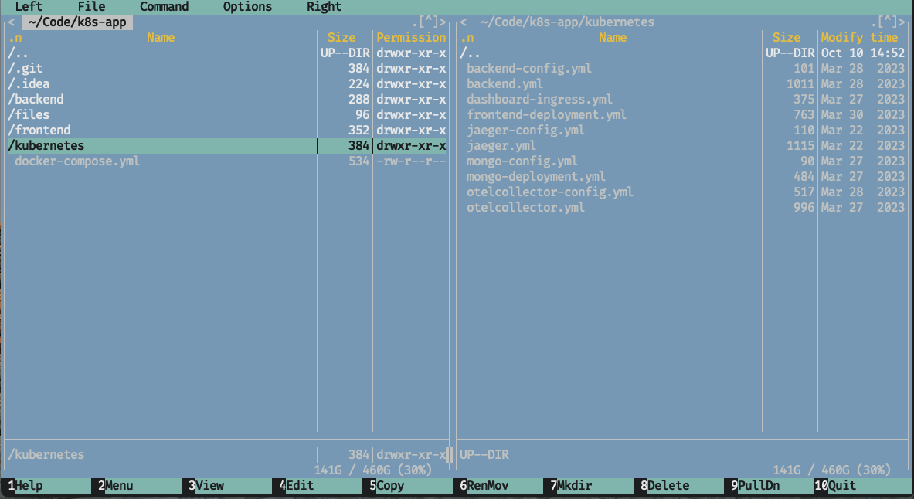
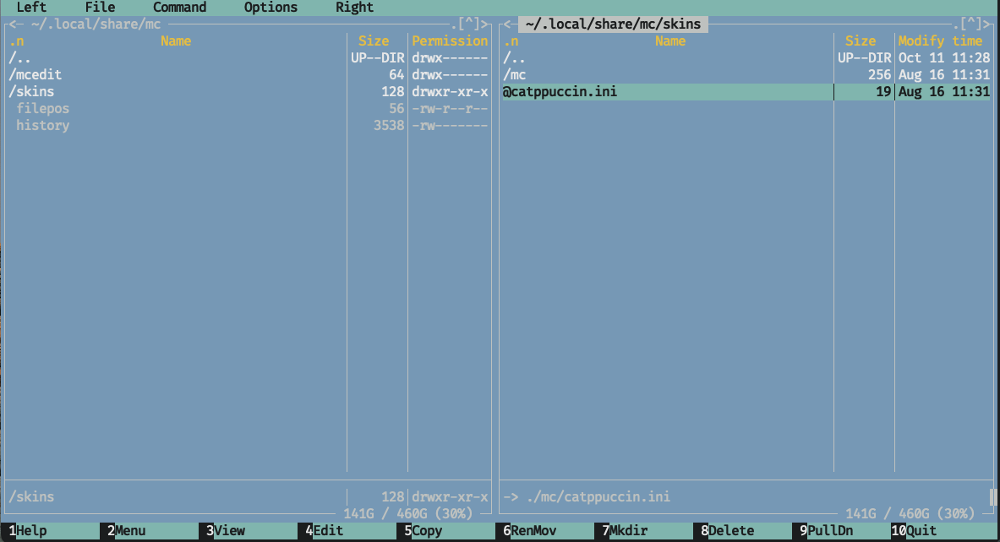
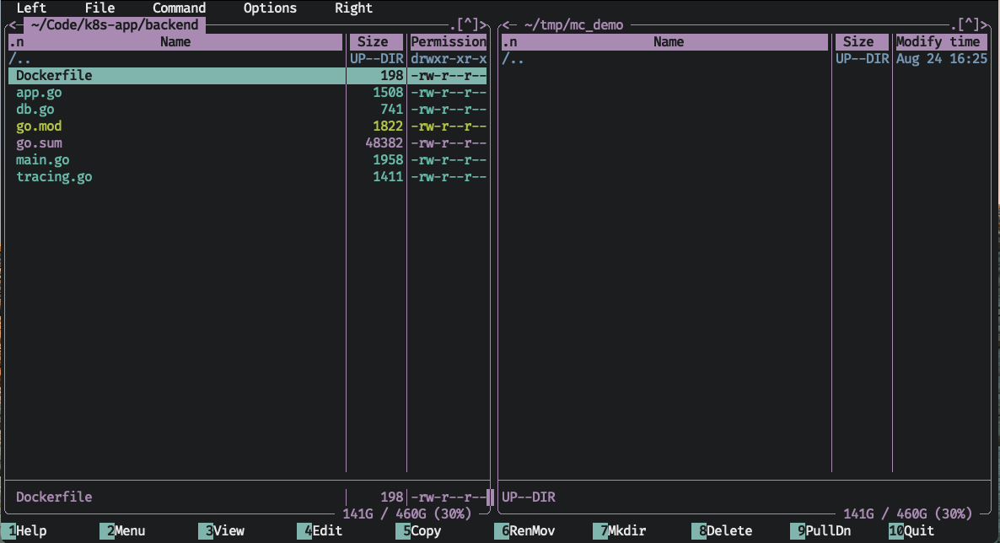
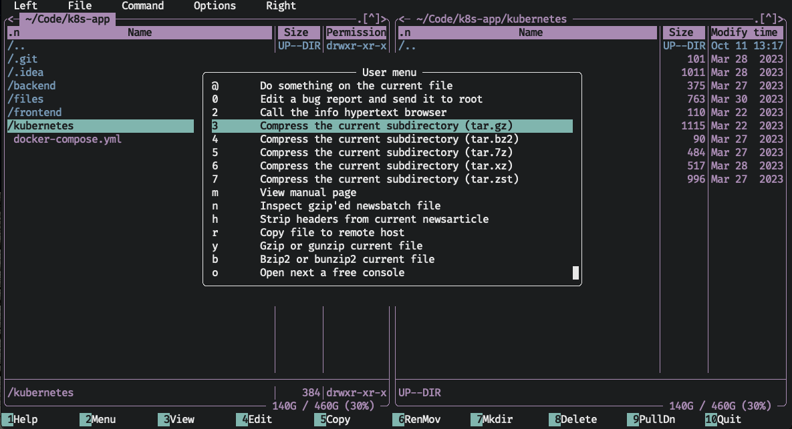

Midnight Commander - Terminal Tooling
mc file_managers
Let's start with a quick screenshot of mc in action.

Eww. How very…MS Dos (or maybe this is nostalgic for you. To each their own). This is intentional; as it started life as a clone of the popular Norton Commander. It was first released in 1994 (8 years after its predecessor) and replicated the dual window text user interface almost exactly.
Fortunately for us, mc allows you to change its appearance through the options menu. I've downloaded the Catppuccin theme and installed it.



Let's take another look:

Much better.
Overview
This is midnight commander (or mc for short). If you read the previous post
about ranger, you'll notice there are two windows not three. Less obvious
is the fact that these two windows are disconnected from each other. Where
ranger's columns represented the parent and child directories of the current
path, these windows are two separate file explorers. Each can be moved about
the file system independently of each other.
Why have two disconnected file viewers? For one extremely helpful reason. Any file or directory action that requires a destination will default to the path of the other window. Let's see an example. As usual, mc can be installed using Homebrew:
brew install mc

In this example, you can see the left window is viewing ~/Code/k8s-app/backend, and the
right window is viewing ~/tmp/mc_demo. On the bottom you'll see the numbers 1-10 and
an action next to each. These are the basic commands you'll likely use most when using
mc. Each number indicates which function key triggers the command (f1 through f10).
Interacting with mc
Midnight commander does not attempt to emulate vim bindings, but rather seeks to replicate a graphical application with menu bar and all. You can even click on almost any element on the screen and interact with it primarily with your mouse. The most common commands of a file manager: Viewing, Editing, Copying, Moving, Deleting, Mkdir.ing, are all one shortcut away using the function keys. Hints are provided at the bottom, including access to a robust help manual:

Basic Copy, Rename, Delete
As the bottom row suggests, you can copy the highlighted file with f5. It will be copied
to the other window (by default, you can edit the destination if you want to copy to a
different destination).

The same is true for RenMov, short for Rename/Move. Hitting
f6 will open the Move prompt. The destination defaults to the other window and if you
just hit enter, it will be moved there.
To rename, open the RenMov dialog again. To simply rename the file, start typing the new
name and the To: field will be replaced with your new name. Hitting enter will rename
the file but keep it in the same directory. To move and rename the file, open the RenMov
prompt, but before you start to type the new name, hit <right> first, this will cause
whatever you type to be appended to the To: prompt rather than overwrite it (you should see the
color of the populated field change color to indicate it changing from overwrite to append mode).
Hitting enter will move the file to the other window and rename it to whatever you typed.
Advanced Copy, Rename, Delete
Like ranger, you can select multiple files to execute any of the actions on. Hit + to
open up a prompt for selection. You can leave the value as is, * for selecting all entries
in the current window, or any regex you want to select only the matching items. If you want
to unselect all files or files matching some regex, hit -.
To select individual files, just hit Control-t.
From here, any Copy, RenMov, or Delete command will apply to all selected files.
Interacting With the Windows
You can swap focus between windows with Tab. To synchronize the directory viewed by the
unfocused tab, hit Option-i. To enter the currently selected directory in the other
window, hit Option-o. To quickly jump to a file path without having to navigate up
or down the directory tree, simply hit Option-c and a cd prompt you for the path to
jump to. If you want to swap the positions of the two windows with each other,
hit Control-u.

Viewing and Editing Files
There are a few different ways you can view files, depending on your needs.
You can use the View quick command (bound to f3). This will either open the built
in file viewer, a fairly bare bones pager, or you can use some external file
viewer (done by toggling the Options->Configuration->'Use internal view' option).
The same is true for editing files (bound to f4. Mc comes with a file editor, equally bare bones,
but that can be changed by toggling the Options->Configuration->'Use internal edit'
option.
For a quicker way to peruse files, you can turn on "Quick View" mode (bound to Control-x q).
In this mode, any regular file that is selected in the active window will have its
contents shown in the inactive window. When you navigate around, the preview window
will update accordingly. It even comes with some basic search and go to functionality.

Hotlist
The "hotlist" is mc's name for what would commonly be called bookmarks today. Using the
hotlist (bound to Control-\), you can save a list of directories that you often visit
and quickly navigate back to them. You can add new directories by first going through
this menu, or from the main screen by hitting Control-x h to quick add the current
directory to the hotlist.

If you have a lot of directories in the hotlist, you can make "groups" (more like folders)
to store logically similar directories together. Just use the New group option and you're
good to go. You can save new directories into them, or move existing entries into or out
of them.
Customization
Midnight commander is very, very customizable. All its configuration is stored in
~/.config/mc/ini1. You could edit this file by hand, but for most settings,
you can go through the Options menu to visually edit them2.
You can also customize the User menu. This is a quick list of actions to perform
on the selected file(s) you can access any time from the Command menu or with f2.

In today's day and age, I find a couple of these actions helpful, like tar.gz-ing the
current directory or viewing a man page, but others like Strip headers from current newsarticle.quaint.
However even this menu is customizable! You can add, remove, or edit any command in this menu
that you like. If there's commands that you often run only in the context of a particular
directory, you can create a local user menu file. How this file actually works and what
all the weird symbols mean is an exercise left to the reader.
Conclusion
The dual window setup might feel a little awkward at first if you're not used to it, but after getting comfortable with it you'll groan every time you have to write out a whole copy command by hand, or open up another finder window and click around until you've found the right directory to copy to.
The heavy reliance on function keys is a bit of a bummer for me as they are far away from
the home row and require some hand contortions on the mac keyboard to hit the fn key. This
can be mitigated in part if you use a keyboard with configurable firmware by placing the
function keys in a more ergonomic location in a layer, but being forced to do this because
of my file manager is a fairly large ask. You can set up some alternate key bindings for
some of the shortcuts, but not the primary ones you see at the bottom of the screen. I
know I am probably in the minority in my unrelenting pursuit of the perfect ergonomic
workflow, so you mileage may vary.
Midnight commander may be from a different era, and so some of its design patterns may be old fashioned, and the terminology my be unfamiliar, but it is an extremely powerful workhorse of a file manager. Older software might not be new and shiny, but it has stood the test of time. For any question you may have on how to do something, there is likely an answer found online. Is there a feature you liked from some other file manager? Someone else has probably missed that feature and written a patch for mc enabling it. New apps may come and go, but mc remains. If the keybindings don't deter you, there could be a very long and happy future for you and midnight commander. If you're not a fan, stay tuned for next week's article.
Alternatives
If you're on Linux, Double Commander is a good GUI based dual window file manager.
Unfortunately, it has lost support for macOS. MaxCommander looks like a good mac
native option (note: I have not tried either of these applications, but have heard
good things). It uses Command-num based shortcuts instead of function keys which
sounds far more ergonomic to me. It is currently $7.99 as of the time of writing
this article and closed source, which could be a deal breaker for you. If you happen
to give it a shot, let me know how you like it.